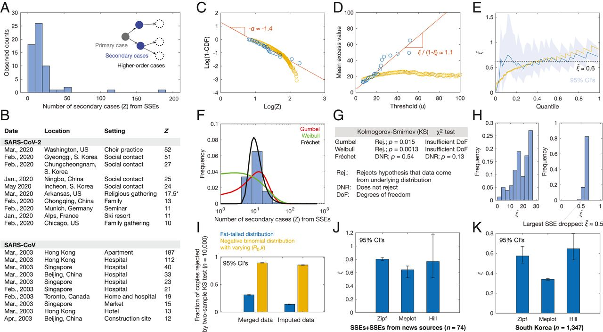

4 Fat Tails
Extremes
Catastrophe Principle
Statistical Consequences of Fat Tails
Power Law Distributions
Pareto Distribution
Pandemic Risk ManagementFat tails and ergodicity tell you the same thing. You’re not going to find the truth through evidence. You find it through time. Academia and science currently are missing this point. Popper. Falsification works in theory but gets hijacked by money and politics in practice. (Portesi)
Science uses statistics &, as per Popper, doesn’t really “accept”, just fails to reject at some significance. It’s fundamentally disconfirmatory. Stat. “evidence” is inherently probabilistic and cannot be “degenerate” (i.e. provide certainties). (Taleb)
4.1 Extremes
The field of Extreme Value Theory focuses on tail properties, not the mean or statistical inference.
It is vastly more effective to focus on being insulated from the harm of random events than try to figure them out in the required details (the inferential errors under fat tails are huge). So it is more solid, much wiser, more ethical, and more effective to focus on detection heuristics and policies rather than fabricate statistical properties.
4.1.1 Catastrophe Principle
Memo Taleb (DarwinCollege):
Where a Pareto distribution prevails (among many), and randomly select two people with combined wealth of £36 million. The most likely combination is not £18 million and £18 million. It is approximately £35,999,000 and £1,000. This highlights the crisp distinction between the two domains; for the class of subexponential distributions, ruin is more likely to come from a single extreme event than from a series of bad episodes. This logic underpins classical risk theory as outlined by Lundberg early in the 20 th Century and formalized by Cramer, but forgotten by economists in recent times. This indicates that insurance can only work in Medocristan; you should never write an uncapped insurance contract if there is a risk of catastrophe. The point is called the catastrophe principle.
Cramer showed insurance could not work outside what he called the Cramer condition, which excludes possible ruin from single shocks.
With fat tail distributions, extreme events away from the centre of the distribution play a very large role. Black swans are not more frequent, they are more consequential. The fattest tail distribution has just one very large extreme deviation, rather than many departures form the norm.
There are three types of fat tails based on mathematical properties.
First there are entry level fat tails. This is any distribution with fatter tails than the Gaussian i.e. with more observations within one sigma and with kurtosis (a function of the fourth central moment) higher than three.
Second, there are subexponential distributions.
LogNormal:
The subexponential class includes the lognormal, which is one of the strangest things on earth because sometimes it cheats and moves up to the top of the diagram. At low variance, it is thin-tailed, at high variance, it behaves like the very fat tailed. in-tailed, at high variance, it behaves like the very fat tailed.
Membership in the subexponential class satisfies the Cramer condition of possibility of insurance (losses are more likely to come from many events than a single one) Technically it means that the expectation of the exponential of the random variable exists.
Third, what is called by a variety of names, the power law, or slowly varying class, or “Pareto tails” class correspond to real fat tails.
The traditional statisticians approach to fat tails has been to assume a different distribution but keep doing business as usual, using same metrics, tests, and statements of significance. But this is not how it really works and they fall into logical inconsistencies.
Once we are outsaide the zone for which statistical techniques were designed, things no longer work as planned. Here are some consequences
The law of large numbers, when it works, works too slowly in the real world (this is more shocking than you think as it cancels most statistical estimators)
The mean of the distribution will not correspond to the sample mean.
In fact, there is no fat tailed distribution in which the mean can be properly estimated directly from the sample mean, unless we have orders of magnitude more data than we doStandard deviations and variance are not useable. They fail out of sample.
Beta, Sharpe Ratio and other common financial metrics are uninformative.
Robust statistics is not robust at all.
The so-called “empirical distribution” is not empirical (as it misrepresents the expected payoffs in the tails).
Linear regression doesn’t work.
Maximum likelihood methods work for parameters (good news). We can have plug in estimators in some situations.
The gap between dis-confirmatory and confirmatory empiricism is wider than in situations covered by common statistics i.e. difference between absence of evidence and evidence of absence becomes larger.
Principal component analysis is likely to produce false factors.
Methods of moments fail to work. Higher moments are uninformative or do not exist.
There is no such thing as a typical large deviation: conditional on having a large move, such move is not defined.
The Gini coefficient ceases to be additive. It becomes super-additive. The Gini gives an illusion of large con- centrations of wealth. (In other words, inequality in a continent, say Europe, can be higher than the average inequality of its members).
While it takes 30 observations in the Gaussian to stabilize the mean up to a given level, it takes \(10^{11}\) observations in the Pareto to bring the sample error down by the same amount (assuming the mean exists). You cannot make claims about the stability of the sample mean with a fat tailed distribution. There are other ways to do this, but not from observations on the sample mean.
We have known at least since Sextus Empiricus that we cannot rule out degeneracy but there are situations in which we can rule out non-degeneracy. If I see a distribution that has no randomness, I cannot say it is not random. That is, we cannot say there are no black swans. Let us now add one observation. I can now see it is random, and I can rule out degeneracy. I can say it is not not random. On the right hand side we have seen a black swan, therefore the statement that there are no black swans is wrong. This is the negative empiricism that underpins Western science. As we gather information, we can rule things out. If we see a 20 sigma event, we can rule out that the distribution is thin-tailed.
Pareto - Scalability
The intuition behind the Pareto Law. It is simply defined as: say X is a random variable. For x sufficently large, the probability of exceeding 2x divided by the probability of exceeding x is no different from the probability of exceeding 4x divided by the probability of exceeding 2x, and so forth.
So if we have a Pareto (or Pareto-style) distribution, the ratio of people with £16 million compared to £8 million is the same as the ratio of people with £2 million and £1 million. There is a constant inequality.
This distribution has no characteristic scale which makes it very easy to understand. Although this distribution often has no mean and no standard deviation we still understand it. But because it has no mean we have to ditch the statistical textbooks and do something more solid, more rigorous.
A Pareto distribution has no higher moments: moments either do not exist or become statistically more and more unstable.
In 2009 I took 55 years of data and looked at how much of the kurtosis (a function of the fourth moment) came from the largest observation. For a Gaussian the maximum contribution over the same time span should be around .008 ± .0028. For the S&P 500 it was about 80 per cent. This tells us that we dont know anything about kurtosis. Its sample error is huge; or it may not exist so the measurement is heavily sample dependent. If we dont know anything about the fourth moment, we know nothing about the stability of the second moment. It means we are not in a class of distribution that allows us to work with the variance, even if it exists. This is finance.
We cannot use standard statistical methods with financial data.
Financial data, debunks all the college textbooks we are currently using Econometrics that deals with squares goes out of the window. The variance of the squares is analogous to the fourth moment. The variance of the squares is analogous to the fourth moment. We do not know the variance. But we can work very easily with Pareto distributions. They give us less information, but nevertheless, it is more rigorous if the data are uncapped or if there are any open variables.
Principal component analysis is a dimension reduction method for big data and it works beautifully with thin tails. But if there is not enough data there is an illusion of a structure. As we increase the data (the n variables), the structure becomes flat.
Lessons:
Once we know something is fat-tailed, we can use heuristics to see how an exposure there reacts to random events: how much is a given unit harmed by them. It is vastly more effective to focus on being insulated from the harm of random events than try to figure them out in the required details (as we saw the inferential errors under fat tails are huge). So it is more solid, much wiser, more ethical, and more effective to focus on detection heuristics and policies rather than fabricate statistical properties.
The beautiful thing we discovered is that everything that is fragile has to present a concave exposure similar –if not identical –to the payoff of a short option, that is, a negative exposure to volatility. It is nonlinear, necessarily. It has to have harm that accelerates with intensity, up to the point of breaking. If I jump 10m I am harmed more than 10 times than if I jump one metre. That is a necessary property of fragility.
We just need to look at acceleration in the tails. We have built effective stress testing heuristics based on such an option-like property.
In the real world we want simple things that work; we want to impress our accountant and not our peers. (My argument in the latest instalment of the Incerto, Skin in the Game is that systems judged by peers and not evolution rot from overcomplication). To survive we need to have clear techniques that map to our procedural intuitions.
The new focus is on how to detect and measure convexity and concavity. This is much, much simpler than probability.
4.2 Statistical Consequences of Fat Tails
Conventional statistics fail to cover fat tails; physicists who use power laws do not usually produce statistical estimators.
Take nothing for granted - It is what it is. Another 300 years of data is required to test a statistical hypothesis. A dataset has no variance. A distribution’s standard deviation will not converge in a lifetime’s worth of data.
Fat tailed random variables challenge our conceptions of mean and standard deviation. Linear regression also breaks under fat tails. The convincing case is made that power law distributions should be the default for modeling data rather than the thin-tailed Normal distribution.
Any distribution with more density in the tails than the Normal distribution is said to have thick tails. This corresponds to raw kurtosis > 3. The tail density needs to decay slower than Normal, \(\frac{-x^2}{e^{2\sigma^2}}\).
Fat tailed distributions are the thickest tailed distributions. The power law is an example of this - they’re the distributions with so much additional density in their tails that moments \(E[X^p]\) are no longer finite.
Zweig
To be insurable, events must be non-subexponential i.e. the probability of exceeding some threshold must be due to a series of small events rather than a single large event. The Cramer condition must also be met (exponential moments of the rv must exist). Normally distributed events meet these conditions, but not thick tailed events. In the former case, exceeding some threshold is more likely to come from a series of events (increasingly so as you move into the tails due to exponential decay of tail probabilities)…hence focus on reducing frequency of events. In the latter case, exceeding some threshold is more likely to come from a single event, so focus must be on reducing impact.
The Lucretius fallacy is when one assumes the worst event experienced in the past is the worst event that can happen in the future. Because an empirical distribution is necessarily censured by x_min and x_max, the empirical distribution is not empirical. Beyond the observed max, there is a hidden portion of the distribution not shown in past samples whose moments are unknown (and do not converge via the Glivenko-Cantelli theorem). This is a problem for Kolmogorov-Smirnoff tests. It is better to use MLE to get the ‘excess’ or ‘shadow’ mean (the mean beyond the sample max). Assuming you can estimate the tail exponent, this approach works better for out-of-sample inference than use of the sample mean (biased under thick tails). The lower the tail exponent and smaller the sample, the more the tail is hidden.
The precautionary principle is necessary for higher order units (ecosystem, humanity, etc.) that do not “renew” the way lower order units do (individual people, animals, goods, etc.). With repeated exposure to a low-probability event, its probability of occurrence will approach 1 over time. If one’s exposure f(x) has an absorbing barrier, they must focus on time probability (path dependence) rather than ensemble probability (path independence). Since financial asset prices, particularly equities, are non-ergodic (time average <> ensemble average due to fat tails), one is not guaranteed the return of the market unconditionally. Hence the myopic loss aversion explanation (increased sensitivity to losses and less willingness to accept risk the more often you check performance) of the equity risk premium puzzle falls apart. Risks accumulate for individuals, making it rational to be loss averse and avoid tail risks.
Zweig: Suimmary of Talebs ‘Fat Tails’
4.2.1 Power Law Distributions
4.2.1.1 Pareto Distribution
Pareto discovered that 20% percent of taxpayers had 80% of the income across countries in Europe. One parameter of the Pareto power law distribution is α, which is known as the tail index. Pareto’s 80-20 example corresponds to α = 1.16. The tail index describes the behavior of density decay in the tail, as its name implies.
The strange thing about power law distributions is that, depending on the tail index α, some of its moments may not exist or be infinite. There is no finite mean if α < 1, and there is no finite variance if α < 2. The same applies for skewness at α < 3 and kurtosis when α < 4, and so on. The tails get thicker as α gets smaller.
Pseudo-convergence: A tail index less than 2 doesn’t mean that we can’t compute the sample variance of dataset. Rather, betting on the stability of the variance is unwise because this sample variance will never converge, and can in fact “spike” at any time. Furthermore, if the 4th moment (kurtosis) doesn’t exist, this may imply unbearably slow convergence of the 2nd moment (variance).
The Central Limit Theorem, which is typically very useful for sums and averages, requires a finite variance, so tail indices α < 2 do not obey. The assumption for the analytic Black-Scholes-Merton price for a financial option - that the random walk sum of movements converges to the Normal distribution - is also violated, so that breaks too. If the tail index is slightly over 2, it will converge to the Normal in the limit, but very slowly.
Tail events - the unlikely events of the atypically large magnitude - are the most indicative of the tail behavior. But these tail events are rare. Without a deep understanding of the underlying process which has generated these samples, it can be tough to rule out that the data was generated by a power law. In this sense, we might consider that “most” processes are fat tailed by default - or, we should at least assume they are until we have enough quantitative or qualitative data to prove otherwise.
4.3 Lindy Effect
Increasing lifetime expections
If a book has been in print for forty years, I can expect it to be in print for another forty years. But, and that is the main difference, if it survives another decade, then it will be expected to be in print another fifty years. This, simply, as a rule, tells you why things that have been around for a long time are not “aging” like persons, but “aging” in reverse. Every year that passes without extinction doubles the additional life expectancy. This is an indicator of some robustness. The robustness of an item is proportional to its life! (Taleb)
Pareto Lindy
Lifetimes following the Pareto distribution (a power-law distribution) demonstrate the Lindy effect.
With the parameter \(α = 2\), conditional on reaching an age of \(x > x_{min}\), the expected future lifetime is also \(x\).
Initially the expected lifetime is \(2 x_{min}\) but if that point is reached then the expected future lifetime is also \(2 x_{min}\); if that point is reached making the total lifetime so far \(4 x_{min}\) then the expected future lifetime is \(4 x_{min}\); and so on.
More generally with proportionality rather than equality, given \(m > 0\) and using the parameter \(\alpha = \frac {m}{m-1}\) in the Pareto distribution, conditional on reaching any age of \(x > x_{min}\), the expected future lifetime is \(( m − 1 ) x\).
Example: for \(α = 2\) or \(m = 2\) the expected future lifetime is \(x\) .
The Lindy effect is connected to Pareto’s Law, to Zipf’s Law, and to socioeconomic inequality.
Current age is the only piece of information we know at time 0. In the absence of all information except for current age, the best estimator for future life expectancy is the current age.
In real life, however, there is usually far more information you can incorporate. The Lindy Effect is thus a trivial heuristics, the usefulness of which decreases as if you acquire additional relevant information.
4.4 Superspreaders
Wong
Superspreading has been recognized as an important phenomenon arising from heterogeneity in individual disease transmission patterns (1). The role of superspreading as a significant source of disease transmission has been appreciated in outbreaks of measles, influenza, rubella, smallpox, Ebola, monkeypox, SARS, and SARS-CoV-2 (1, 2). A basic definition of an nth-percentile superspreading event (SSE) has been proposed to be any infected individual who infects more people than does the nth-percentile of other infected individuals (1). Hence, if the number of secondary cases is randomly distributed, then for large n, SSEs can be viewed as right-tail events. A natural language for understanding the tail events of random distributions is extreme value theory, which has been applied to contexts as diverse as insurance (3) and contagious diseases (4). Here, we apply extreme value theory to empirical data on superspreading in order to gain insight into this critical phenomenon impacting the current COVID-19 pandemic.

Figure: SARS-CoV and SARS-CoV-2 SSEs correspond to fat tails. (A) Histogram of Z for 60 SSEs. (B) Subsample of 20 diverse SARS-CoV and SARS-CoV-2 SSEs. *See Dataset S1 for details. (C) Zipf plots of SSEs (blue) and 10,000 samples of a negative binomial distribution with parameters (R0,k) = (3,0.1), conditioned on Z > 6 (yellow). (D) Meplots corresponding to C. (E) Plots of \(\hat{ξ}\), the Hill estimator for ξ, for the samples in C. (F) Different extreme value distribution fits to the distribution of SSEs. (G) One-sample Kolmogorov–Smirnov and \(χ^{2}\) goodness-of-fit test results for the fits in F. (H) Robustness of results, accounting for noise (Left) and incomplete data (Right). (I) Inconsistency of the maxima of 10,000 samples of a negative binomial distribution (yellow) with the SSEs in A, accounting for variability in (R0,k) and data merging and imputation, in contrast to the maxima of 30 samples from a fat-tailed (Fréchet) distribution (blue) with tail parameter α = 1.7 and mean R0 = 3. The numbers of samples in each case were determined so that the sample mean of maxima is equal to the sample mean from A. (J–K) Generality of inferred \(ξ\) to 14 additional SSEs from news sources (J) and a dataset of 1,347 secondary cases arising from 5,165 primary cases in South Korea (K).
The Zipf plot shown in Fig.1C is a log-log plot of the survival function against the number of secondary cases, and the linearly decreasing behavior it shows suggests a power-law scaling of the form $Pr(Z>t)~t^{α} for large t. The value of the power-law coefficient, \(α≈1.45\) (95% CI: [1.38,1.51]), is greater than 1. Equivalently, this observation indicates that the tails of \(Z\) —as quantified by the threshold exceedance values \({Z_{i–u} | Z_{i} ≥u}\) —can be described by the generalized Pareto distribution, withcorresponding tail index \(ξ=1/α ≈ 0.7\) (95% CI: [0.62,0.76]). That \(ξ≤1\) is significant, since all moments higher than \(1/ξ\) diverge for a generalized Pareto distribution. The Zipf plot can be complemented by computing the mean excess function of \(Z\), \(e(u) = E(Z–u | Z≥u)\), which for a generalized Pareto distribution is linear in \(u\) with slope \(ξ/(1–ξ)\). Hence, checking for linearity in a plot of \(u\) against \(e(u) — a\) mean excess plot — above some threshold u allows one to verify the existence of fat tails. We observed in a meplot that for u>10, e(u) indeed increases approximately linearly with a slope of ~1.11 (Fig.1D; 95% CI: [1.02,1.20]; adjusted \(R^{2}\) : 0.91), suggesting a value of \(ξ≈0.5\), which is qualitatively consistent with the Zipf plot of Fig.1C
The Hill estimator of the tail index \(ξ\) is
\[\hat{ξ}(k) = \frac{1}{k} \sum_{i=1}^{k} log \frac{Z_{i,n}}{Z_{k,n}}\]
where 2≤k≤n and Z n,n ≤Z n-1,n ≤…≤Z 1,n are order statistics of the sample {Z i }. Plotting \(ξ\) against \(k\), we find that the value of \(ξ ≈0.6\) (95% CI: [0.4,1.0]) observed for a broad range of \(k\) is similar to the estimates above (Fig.1E). We found similar values of \(ξ\) for two other estimators, the Pickands and Dekkers-Einmahl-de Haan estimators. A negative binomial distribution of Z, with its exponential tail, would have predicted the distribution of SSEs to be Gumbel-like if each SSE were indeed a maximum of samples of \(Z\). This assertion can be proven by verifying the conditions
\[\underset{n\to \infty}{\lim} \frac{\sum_{n}^{\infty} P_{j}}{\sum_{n+1}^{\infty} P_{j}} = const\]
\[\underset{n\to \infty}{\lim} \sum_{n+2}^{\infty} \frac{P_{j}}{P_{n+1}}-\sum_{n+1}^{\infty}\frac{P_{j}}{P_{n}}= 0\]
where \(P_{j} =Pr(Z=j)\), sufficient for any discrete distribution to lie in a Gumbel-like domain of attraction. These considerations provide additional evidence suggesting that Z is not negative binomial.
Wong (2021) Coronavirus superspreading is fat-tailed (PNAS) (pdf) (pdf SM)